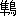
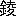

文政四年の
師走である。
加賀の
宰相治修の
家来に
知行六百
石の
馬廻り
役を勤める
細井三右衛門と云う
侍は相役
衣笠太兵衛の次男
数馬と云う若者を打ち
果した。それも果し合いをしたのではない。ある
夜の
戌の
上刻頃、数馬は南の
馬場の下に、
謡の会から帰って来る三右衛門を
闇打ちに打ち果そうとし、
反って三右衛門に斬り伏せられたのである。
この始末を聞いた
治修は三右衛門を目通りへ召すように命じた。命じたのは必ずしも偶然ではない。第一に治修は
聡明の
主である。聡明の主だけに何ごとによらず、
家来任せということをしない。みずからある判断を
下し、みずからその実行を命じないうちは心を安んじないと云う風である。治修はある時二人の
鷹匠にそれぞれみずから
賞罰を与えた。これは治修の事を処する
面目の一端を語っているから、大略を
下に抜き書して見よう。
「ある時
石川郡市川村の
青田へ
丹頂の鶴
群れ
下れるよし、
御鳥見役より
御鷹部屋へ
御注進になり、
若年寄より直接
言上に及びければ、
上様には
御満悦に
思召され、翌朝
卯の
刻御供揃い相済み、市川村へ
御成りあり。
鷹には公儀より御拝領の
富士司の
大逸物を始め、
大鷹二基、
二基を

えさせ給う。富士司の御鷹匠は
相本喜左衛門と云うものなりしが、其日は上様御自身に富士司を合さんとし給うに、
雨上りの
畦道のことなれば、思わず
御足もとの狂いしとたん、
御鷹はそれて空中に飛び揚り、丹頂も
俄かに飛び去りぬ。この
様を見たる喜左衛門は
一時の怒に我を忘れ、この
野郎、何をしやがったと
罵りけるが、たちまち
御前なりしに心づき、
冷汗背を
沾すと共に、
蹲踞してお手打ちを待ち居りしに、上様には大きに笑わせられ、予の
誤じゃ、ゆるせと
御意あり。なお喜左衛門の
忠直なるに感じ給い、御帰城の
後は
新地百石に御召し出しの上、
組外れに
御差加えに相成り、
御鷹部屋御用掛に
被成給いしとぞ。
「その後富士司の御鷹は
柳瀬清八の掛りとなりしに、一時
病み鳥となりしことあり。ある日上様清八を召され、富士司の
病はと
被仰し時、すでに快癒の
後なりしかば、すきと
全治、ただいまでは人をも
把り
兼ねませぬと申し上げし所、清八の利口をや
憎ませ給いけん、
夫は一段、さらば人を把らせて見よと御意あり。清八は
爾来やむを得ず、
己が
息子清太郎の
天額にたたき
餌小ごめ餌などを載せ置き、
朝夕富士司を合せければ、鷹も次第に人の天額へ舞い
下る事を覚えこみぬ。清八は取り敢ず御鷹匠
小頭より、人を把るよしを
言上しけるに、そは面白からん、
明日南の
馬場へ
赴き、茶坊主
大場重玄を把らせて見よと
御沙汰あり。
辰の
刻頃より馬場へ
出御、大場重玄をまん中に立たせ、清八、鷹をと御意ありしかば、清八はここぞと富士司を放つに、鷹はたちまち
真一文字に重玄の天額をかい
掴みぬ。清八は得たりと勇みをなしつつ、
圜揚げ（
圜トハ鳥ノ
肝ヲ
云）の
小刀を
隻手に引抜き、重玄を刺さんと飛びかかりしに、
上様には
柳瀬、何をすると
御意あり。清八はこの御意をも恐れず、
御鷹の獲物はかかり次第、
圜を揚げねばなりませぬと、なおも重玄を
刺さんとせし所へ、上様にはたちまち
震怒し給い、
筒を持てと御意あるや否や、日頃
御鍛錬の
御手銃にて、即座に清八を射殺し給う。」
第二に
治修は
三右衛門へ、ふだんから特に目をかけている。
嘗乱心者を取り抑えた際に、三右衛門ほか
一人の
侍は
二人とも額に傷を受けた。しかも一人は
眉間のあたりを、三右衛門は左の
横鬢を紫色に
腫れ
上らせたのである。治修はこの二人を召し、神妙の至りと云う
褒美を与えた。それから「どうじゃ、痛むか？」と尋ねた。すると一人は「
難有い仕合せ、幸い傷は痛みませぬ」と答えた。が、三右衛門は
苦にがしそうに、「かほどの傷も痛まなければ、
活きているとは申されませぬ」と答えた。
爾来治修は三右衛門を正直者だと思っている。あの男はとにかく
巧言は云わぬ、頼もしいやつだと思っている。
こう云う治修は今度のことも、自身こう云う三右衛門に
仔細を尋ねて見るよりほかに
近途はないと信じていた。
仰せを
蒙った三右衛門は恐る恐る
御前へ
伺候した。しかし悪びれた
気色などは見えない。色の浅黒い、筋肉の引き
緊った、多少
疳癖のあるらしい顔には決心の影さえ
仄めいている。治修はまずこう尋ねた。
「三右衛門、
数馬はそちに闇打ちをしかけたそうじゃな。すると何かそちに対し、
意趣を含んで居ったものと見える。何に意趣を含んだのじゃ？」
「何に意趣を含みましたか、しかとしたことはわかりませぬ。」
治修はちょいと考えた
後、念を押すように尋ね直した。
「何もそちには覚えはないか？」
「覚えと申すほどのことはございませぬ。しかしあるいはああ云うことを
怨まれたかと思うことはございまする。」
「何じゃ、それは？」
「四日ほど前のことでございまする。
御指南番山本小左衛門殿の道場に
納会の試合がございました。その節わたくしは小左衛門殿の代りに
行司の役を勤めました。もっとも
目録以下のものの勝負だけを見届けたのでございまする。数馬の試合を致した時にも、行司はやはりわたくしでございました。」
「数馬の相手は誰がなったな？」
「
御側役平田喜太夫殿の
総領、
多門と申すものでございました。」
「その試合に
数馬は負けたのじゃな？」
「さようでございまする。
多門は
小手を一本に
面を二本とりました。数馬は一本もとらずにしまいました。つまり三本勝負の上には
見苦しい負けかたを致したのでございまする。それゆえあるいは
行司のわたくしに意趣を含んだかもわかりませぬ。」
「すると数馬はそちの行司に
依怙があると思うたのじゃな？」
「さようでございまする。わたくしは依怙は致しませぬ。依怙を致す
訣もございませぬ。しかし数馬は依怙のあるように疑ったかとも思いまする。」
「日頃はどうじゃ？ そちは何か数馬を相手に口論でも致した覚えはないか？」
「口論などを致したことはございませぬ。ただ………」
三右衛門はちょっと云い
澱んだ。もっとも云おうか云うまいかとためらっている
気色とは見えない。
一応云うことの順序か何か考えているらしい
面持ちである。
治修は
顔色を
和げたまま、静かに三右衛門の話し出すのを待った。三右衛門は
間もなく話し出した。
「ただこう云うことがございました。試合の前日でございまする。数馬は突然わたくしに先刻の無礼を
詫びました。しかし先刻の無礼と申すのは一体何のことなのか、とんとわからぬのでございまする。また何かと尋ねて見ても、数馬は
苦笑いを致すよりほかに返事を致さぬのでございまする。わたくしはやむを得ませぬゆえ、無礼をされた覚えもなければ詫びられる覚えもなおさらないと、こう数馬に答えました。すると数馬も
得心したように、では思違いだったかも知れぬ、どうか心にかけられぬ様にと、今度は素直に申しました。その時はもう苦笑いよりは
北叟笑んでいたことも覚えて居りまする。」
「何をまた数馬は思い違えたのじゃ？」
「それはわたくしにもわかり兼ねまする。が、いずれ取るにも足らぬ
些細のことだったのでございましょう。――そのほかは何もございませぬ。」
そこにまた短い沈黙があった。
「ではどうじゃな、数馬の気質は？ 疑い深いとでも思ったことはないか？」
「疑い深い気質とは思いませぬ。どちらかと申せば若者らしい、何ごとも色に
露わすのを恥じぬ、――その代りに多少激し易い気質だったかと思いまする。」
三右衛門はちょっと言葉を切り、さらに言葉をと云うよりは、
吐息をするようにつけ加えた。
「その上あの多門との試合は大事の試合でございました。」
「大事の試合とはどう云う
訣じゃ？」
「数馬は
切り
紙でござりまする。しかしあの試合に勝って居りましたら、目録を
授ったはずでございまする。もっともこれは多門にもせよ、同じ
羽目になって居りました。数馬と多門とは同門のうちでも、ちょうど腕前の
伯仲した
相弟子だったのでございまする。」
治修はしばらく黙ったなり、何か考えているらしかった。が、急に気を変えたように、今度は三右衛門の
数馬を殺した当夜のことへ問を移した。
「数馬は確かに馬場の下にそちを待っていたのじゃな？」
「多分はさようかと思いまする。その
夜は急に雪になりましたゆえ、わたくしは
傘をかざしながら、
御馬場の下を通りかかりました。ちょうどまた
伴もつれず、
雨着もつけずに参ったのでございまする。すると
風音の高まるが早いか、左から雪が
しまいて参りました。わたくしは
咄嗟に半開きの傘を斜めに左へ廻しました。数馬はその
途端に
斬りこみましたゆえ、わたくしへは手傷も
負わせずに傘ばかり斬ったのでございまする。」
「声もかけずに斬って参ったか？」
「かけなかったように思いまする。」
「その時には相手を何と思った？」
「何と思う
余裕もござりませぬ。わたくしは傘を斬られると同時に、思わず右へ飛びすさりました。
足駄ももうその時には
脱いで居ったようでございまする。と、
二の
太刀が参りました。二の太刀はわたくしの羽織の
袖を五寸ばかり斬り裂きました。わたくしはまた飛びすさりながら、抜き打ちに相手を払いました。数馬の
脾腹を斬られたのはこの
刹那だったと思いまする。相手は何か申しました。………」
「何かとは？」
「何と申したかはわかりませぬ。ただ何か烈しい中に声を出したのでございまする。わたくしはその時にはっきりと数馬だなと思いました。」
「それは何か申した声に聞き覚えがあったと申すのじゃな？」
「いえ、左様ではございませぬ。」
「ではなぜ数馬と
悟ったのじゃ？」
治修はじっと三右衛門を眺めた。三右衛門は何とも答えずにいる。治修はもう一度
促すように、同じ言葉を繰り返した。が、今度も三右衛門は
袴へ目を落したきり、容易に口を開こうともしない。
「三右衛門、なぜじゃ？」
治修はいつか別人のように、威厳のある態度に変っていた。この態度を急変するのは治修の
慣用手段の一つである。三右衛門はやはり目を伏せたまま、やっと
噤んでいた口を開いた。しかしその口を
洩れた言葉は「なぜ」に対する答ではない。意外にも甚だ
悄然とした、罪を謝する言葉である。
「あたら
御役に立つ侍を一人、刀の
錆に致したのは三右衛門の罪でございまする。」
治修はちょっと
眉をひそめた。が、目は
不相変厳かに三右衛門の顔に注がれている。三右衛門はさらに言葉を続けた。
「
数馬の
意趣を含んだのはもっともの次第でございまする。わたくしは
行司を勤めた時に、
依怙の
振舞いを致しました。」
治修はいよいよ眉をひそめた。
「そちは
最前は依怙は致さぬ、致す
訣もないと申したようじゃが、……」
「そのことは今も変りませぬ。」
三右衛門は
一言ずつ考えながら、
述懐するように話し続けた。
「わたくしの依怙と申すのはそう云うことではございませぬ。ことさらに数馬を負かしたいとか、
多門を勝たせたいとかと思わなかったことは申し上げた通りでございまする。しかし何もそればかりでは、依怙がなかったとは申されませぬ。わたくしは一体多門よりも数馬に望みを
嘱して居りました。多門の芸はこせついて居りまする。いかに
卑怯なことをしても、ただ勝ちさえ致せば
好いと、勝負ばかり心がける
邪道の芸でございまする。数馬の芸はそのように
卑しいものではございませぬ。どこまでも
真ともに敵を迎える
正道の芸でございまする。わたくしはもう二三年致せば、多門はとうてい数馬の
上達に及ぶまいとさえ思って居りました。………」
「その数馬をなぜ負かしたのじゃ？」
「さあ、そこでございまする。わたくしは確かに多門よりも数馬を勝たしたいと思って居りました。しかしわたくしは行司でございまする。行司はたといいかなる時にも、
私曲を
抛たねばなりませぬ。一たび
二人の
竹刀の
間へ、
扇を持って立った上は、天道に従わねばなりませぬ。わたくしはこう思いましたゆえ、多門と数馬との立ち合う時にも公平ばかりを心がけました。けれどもただいま申し上げた通り、わたくしは数馬に勝たせたいと思って
居るのでございまする。云わばわたくしの心の
秤は数馬に傾いて居るのでございまする。わたくしはこの心の
秤を
平らに致したい一心から、自然と多門の皿の上へ
錘を加えることになりました。しかも
後に考えれば、加え過ぎたのでございまする。多門には
寛に失した代りに、数馬には厳に過ぎたのでございまする。」
三右衛門はまた言葉を切った。が、治修は
黙然と耳を傾けているばかりだった。
「二人は
正眼に構えたまま、どちらからも最初にしかけずに居りました。その内に多門は
隙を見たのか、数馬の
面を取ろうと致しました。しかし数馬は気合いをかけながら、
鮮かにそれを切り返しました。同時にまた多門の
小手を打ちました。わたくしの依怙の致しはじめはこの
刹那でございまする。わたくしは確かにその一本は数馬の勝だと思いました。が、勝だと思うや否や、いや、竹刀の当りかたは弱かったかも知れぬと思いました。この二度目の考えはわたくしの
決断を
鈍らせました。わたくしはとうとう数馬の上へ、当然挙げるはずの扇を挙げずにしまったのでございまする。二人はまたしばらくの
間、
正眼の
睨み合いを続けて居りました。すると今度は
数馬から
多門の
小手へしかけました。多門はその
竹刀を払いざまに、数馬の小手へはいりました。この多門の取った小手は数馬の取ったのに比べますと、弱かったようでございまする。少くとも数馬の取ったよりも見事だったとは申されませぬ。しかしわたくしはその
途端に多門へ扇を挙げてしまいました。つまり最初の一本の勝は多門のものになったのでございまする。わたくしはしまったと思いました。が、そう思う心の裏には、いや、
行司は誤っては居らぬ、誤って
居ると思うのは数馬に
依怙のあるためだぞと
囁くものがあるのでございまする。………」
「それからいかが致した？」
治修はやや
苦にがしげに、
不相変ちょっと口を
噤んだ三右衛門の話を
催促した。
「二人はまたもとのように、竹刀の先をすり合せました。一番長い
気合のかけ合いはこの時だったかと覚えて居りまする。しかし数馬は相手の竹刀へ竹刀を
触れたと思うが早いか、いきなり
突を入れました。突はしたたかにはいりました。が、同時に多門の竹刀も数馬の
面を打ったのでございまする。わたくしは
相打ちを伝えるために、まっ直に扇を挙げて居りました。しかしその時も相打ちではなかったのかもわかりませぬ。あるいは
先後を定めるのに迷って居ったのかもわかりませぬ。いや、突のはいったのは面に竹刀を受けるよりも先だったかもわかりませぬ。けれどもとにかく相打ちをした二人は四度目の睨み合いへはいりました。すると今度もしかけたのは数馬からでございました。数馬はもう一度突を入れました。が、この時の数馬の竹刀は心もち先が
上って居りました。多門はその竹刀の下を
胴へ打ちこもうと致しました。それからかれこれ十
合ばかりは互に
を
削りました。しかし最後に入り身になった多門は数馬の面へ打ちこみました。………」
「その面は？」
「その面は見事にとられました。これだけは誰の目にも疑いのない多門の勝でございまする。数馬はこの面を取られた
後、だんだんあせりはじめました。わたくしはあせるのを見るにつけても、今度こそはぜひとも数馬へ扇を挙げたいと思いました。しかしそう思えば思うほど、実は扇を挙げることをためらうようになるのでございまする。二人は今度もしばらくの
後、七八
合ばかり打ち合いました。その内に数馬はどう思ったか、多門へ
体当りを試みました。どう思ったかと申しますのは
日頃数馬は体当りなどは決して致さぬゆえでございまする。わたくしははっと思いました。またはっと思ったのも当然のことでございました。多門は
体を開いたと思うと、見事にもう一度面を取りました。この最後の勝負ほど、
呆気なかったものはございませぬ。わたくしはとうとう三度とも多門へ扇を挙げてしまいました。――わたくしの依怙と申すのはこう云うことでございまする。これは心の
秤から見れば、云わば
一毫を加えたほどの
吊合いの狂いかもわかりませぬ。けれども数馬はこの依怙のために大事の試合を
仕損じました。わたくしは
数馬の
怨んだのも、今はどうやら不思議のない
成行だったように思って居りまする。」
「じゃがそちの斬り払った時に数馬と申すことを
悟ったのは？」
「それははっきりとはわかりませぬ。しかし今考えますると、わたくしはどこか心の底に数馬に済まぬと申す気もちを持って居ったかとも思いまする。それゆえたちまち
狼藉者を数馬と悟ったかとも思いまする。」
「するとそちは数馬の最後を気の毒に思うて
居るのじゃな？」
「さようでございまする。
且はまた
先刻も申した通り、一かどの御用も勤まる侍にむざと命を
殞させたのは、何よりも
上へ対し奉り、申し
訣のないことと思って居りまする。」
語り終った三右衛門はいまさらのように
頭を垂れた。
額には
師走の寒さと云うのに汗さえかすかに光っている。いつか
機嫌を直した
治修は
大様に何度も
頷いて見せた。
「
好い。好い。そちの心底はわかっている。そちのしたことは悪いことかも知れぬ。しかしそれも
詮ないことじゃ。ただこの
後は――」
治修は言葉を終らずに、ちらりと
三右衛門の顔を眺めた。
「そちは
一太刀打った時に、数馬と申すことを知ったのじゃな。ではなぜ打ち果すのを
控えなかったのじゃ？」
三右衛門は治修にこう問われると、
昂然と浅黒い顔を起した。その目にはまた前にあった、不敵な
赫きも宿っている。
「それは打ち果さずには置かれませぬ。三右衛門は御家来ではございまする。とは云えまた侍でもございまする。数馬を気の毒に思いましても、狼藉者は気の毒には思いませぬ。」
（大正十二年十二月）